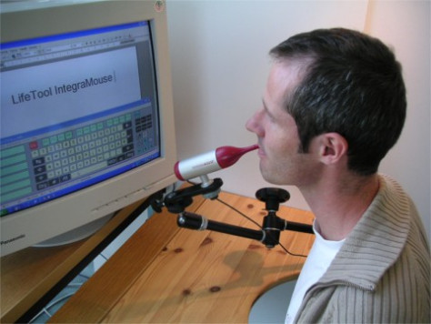

Intro to a11y
Michael Fairchild
What is a11y
- a11y is short for accessibility, a(11 characters)y
- The practice of making things usable by everyone
- This talk is specifically about web a11y
a11y helps everyone
-
a11y is really about Universal Design, Inclusive Design, or Compassionate Design
- build things so that everyone can use them from the start. Don't wait to fix it.
- At some point in your life, a11y features will help you
- a11y features can also be used to add cool features (searchable captions)
What are some difficulties that people can have?
- Vision impairment
- Hearing loss
- Mobility, motor and dexterity
- Cognitive impairment
- Aging and life in general
Vision Impairment
Many different kids. To name just a few:
- low vision
- color blindness
- partial vision
- legally blind
Examples of color blindness
About 8% of all males are colorblind (source)
Normal Vision

Protanomaly - less sensitive to red

Deuteranomaly - less sensitive to green

Tritanomaly - less sensitive to blue

Achromatopsia 1 in 33,000

More examples of vision impairments

Macular degeneration
Most common: age related. 1.75 million individuals in the United States(source)

Vision Pro-tips
- Don't rely on color - use shapes and text
- Ensure text contrast with the background is at least 4.5:1 (WCAG 2.0 AA)
- Provide text alternatives for everything that is important
-
Make sure all form inputs have labels
<label> Your first name <input type="text" name="firstname" /> </label>
Vision Assistive Technology
Glasses or Contacts

Magnification
Braille devices
Screen Readers
- There are a lot of screen readers. VoiceOver, Jaws and NVDA to name a few.
- Common misconception: they are their own browser. NOT TRUE
- Note: if you need to use a screen reader, you probably can't use a mouse.
A screen reader demo by Laura Palmaro (Google), check out the entire video "Quality, Equality, and Accessibility"
Hearing Loss
- Ranges from partial to full
- About 15% of Americal adults (37.5 million people) have trouble hearing (source)
Hearing loss AT
Hearing aids
Captions
Image source: The movie Anchorman - DreamWorks
Hearing loss Pro-tips
- Subtitles - just voices
- Captions - include everything
- Helpful to everyone
- Searchable captions anyone??
Mobility
- Can range from partial to full (paralyzed)
- Ability to use hands affects the web the most
Mobility AT
Mouth Stick
Sip and Puff
Switch Scanning
Mobility Pro-tips
- Make sure that your website can be used without a mouse (keyboard only)
-
Skip Nav
- Boostrap example
- No Skip-nav
- With Skip-nav
-
Make sure current focus is visually shown
Avoid this css:
:focus { outline: 0; }
Mobility Pro-tips continued
Logical Tab order
<input name="outoforder" tabindex="5" />Mobility Pro-tips continued
Avoid Keyboard Traps
<script>
var keypress_num = 0;
$(document).ready(function(){
$('#number_of_tickets').keydown(function(e){
keypress_num++;
$('#keypress_num').text(keypress_num);
// Ensure that it is a number and stop the keypress
if ((e.shiftKey || (e.keyCode < 48 || e.keyCode > 57)) && (e.keyCode < 96 || e.keyCode > 105)) {
e.preventDefault();
}
});
});
</script>Avoid the title element
Don't use the title element. List of reasons why:
- Only works on hover
- Can have unexpected results when using a screen reader
<a href="http://google.com/" title="google">google</a>Cognitive impairments
There is a huge range, and a lot of this is addressed at the content development level.
- Reading - between 50 and 120 characters per line (source)
- Dyslexia - choose your font carefully
- Memory - try not to rely on memory for interaction
The Effects of Aging
Aging affects nearly 100% of the population, including you at some point.

- Pretty much everything that I just covered can be caused by aging.
- However, a lot can simply be temporary (broken arm).
Image source: the movie UP - from Pixar
Standards - WCAG
Web Content Accessibility Guidelines (WCAG) 2.0 is the most widely used standard. Use it. Don't make your own.
4 main principles, each broken into guidelines and then into techniques
P-O-U-R
- Perceivable - it can't be invisible to all of their senses
- Operable - the interface cannot require interaction that a user cannot perform
- Understandable - the content or operation cannot be beyond their understanding
- Robust - as technologies and user agents evolve, the content should remain accessible
ARIA
Accessible Rich Internet Applications (ARIA) aims to make complex interactions accessible.
aria-hidden="true"- content is hidden from ATaria-live="polite"- announce content changes to AT as they happenrole="button"- Make a {span} a button and accessible to AT
ARIA Example - Tabs - without ARIA
- Which tab is currently selected?
- What are the boundaries of the tab panels?
- What happens when a tab link is clicked (how do I know something changed?)
<ul class="tabs">
<li><a href="#tab1">Tab #1</a></li>
<li><a href="#tab2">Tab #2</a></li>
<li><a href="#tab3">Tab #3</a></li>
<li><a href="#tab4">Tab #4</a></li>
</ul>
<div class="tabs-content">
<div id="tab1">
<h2>Tab 1</h2>
<!-- contents -->
</div>
<div id="tab2">
<h2>Tab 1</h2>
<!-- contents -->
</div>
<div id="tab3">
<h2>Tab 1</h2>
<!-- contents -->
</div>
<div id="tab4">
<h2>Tab 1</h2>
<!-- contents -->
</div>
</div>ARIA Example - Tabs - with ARIA
<div>
<ul role="tablist">
<li id="tab1" aria-controls="panel1" aria-selected="true" role="tab" tabindex="0">Tab1</li>
<li id="tab2" aria-controls="panel2" role="tab" aria-selected="false" tabindex="-1">Tab2</li>
<li id="tab3" aria-controls="panel3" role="tab" aria-selected="false" tabindex="-1">Tab3</li>
<li id="tab4" aria-controls="panel4" role="tab" aria-selected="false" tabindex="-1">Tab4</li>
</ul>
<div id="panel1" aria-labelledby="tab1" role="tabpanel">
<!-- contents -->
</div>
<div id="panel2" aria-labelledby="tab2" role="tabpanel">
<!-- contents -->
</div>
<div id="panel3" aria-labelledby="tab3" role="tabpanel">
<!-- contents -->
</div>
<div id="panel4" aria-labelledby="tab4" role="tabpanel">
<!-- contents -->
</div>
</div>ARIA - Tabs - Screen reader example
Without ARIA
With ARIA
How to test your code
-
Automated tools
- HTML_Codesniffer (free)
- pa11y (free)
- Tenon.io (paid)
- AXE, by Deque (free)
- LOTS MORE
-
Manual testing
- Screen Readers (VO)
- Only a keyboard
- Actual AT users (don't rely on yourself)
- You need to do both! Automated can only catch ~40% of problems
- TEST OFTEN
Code Example
How can this be improved?
<!doctype html>
<html lang="en">
<head>
<meta charset="utf-8">
<title>a11y issues</title>
</head>
<body>
<div class="header">
<img src="banner-image" />
<div class="nav">
<ul>
<li><a href="#">link 1</a></li>
<li><a href="#">link 2</a></li>
<li><a href="#">link 3</a></li>
</ul>
</div>
</div>
<div class="main">
<div class="hero">
<!-- A hero is a full-width 'band', with an attention grabbing picture, text and call to action -->
<img src="hero.jpg" alt="hero.jpg" />
<a href="http://twitter.com/follow-me" class="icon-font-twitter"></a>
</div>
<form>
What is your name?
<br/>
<input type="text" name="full-name" />
<br/>
<img src="submit" onclick="$(this).closest('form').submit();">
</form>
</div>
<div class="footer">
This is footer stuff
</div>
</body>
</html>- Lots of problems
Use Semantics
Avoid giving meaning to divs and spans where possible. Instead use native elements.
<header><footer><nav><main>
The above are considered Landmarks, allowing AT users to jump to sections of a page quickly.
Heading order matters
Also, please use heading elements (eg. <h2>) correcty (in order, don't skip).
alt text
Alt text can get complicated
- Avoid text in images. If you must, use the text as your alt text
- All images need an alt attribute
- Leave alt attribute empty (alt="") if the image is PURELY presentational (rare)
- If the image gives meaning to the page, it needs alt text
- Avoid use of placeholders - they will become permanent
- Important: limit of 125 characters
Link text - font icons
Bad
<i class="fa fa-twitter"></i> @mfairchild365Better
<span class="fa fa-twitter" aria-hidden="true"></span><span class="visually-hidden">Follow us on twitter: </span> @mfairchild365.visually-hidden {
position: absolute !important;
top: -9999px !important;
left: -9999px !important;
}Wait what? Why not display: none?
display: none- hidden from everythingaria-hidden="true"- hidden from just AT.visually-hidden- hidden from just your eyes
Don't misuse elements (submit button)
Use elements for what they were designed to do. If you must change how it works or how it looks, use JS and CSS. but make sure it is still accessible. If you go rogue, so will your code. You will have to worry about:
- Focus management
- Interaction management
- Text equivalent
- Browser support
- Possibly more
How to learn more
- http://a11yproject.com/
- Follow me on twitter: @mfairchild365
/